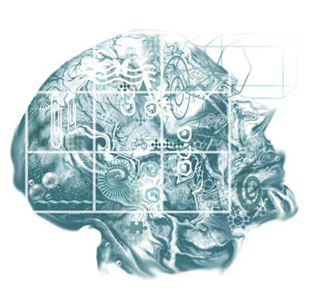

Homepage
Schedule
- Starts: 10/10/2011
- Ends: 18/10/2011
Instructors
- Sebastian Thrun, a Research Professor of Computer Science at Stanford University, a Google Fellow, a member of the National Academy of Engineering and the German Academy of Sciences. Thrun is best known for his research in robotics and machine learning.
- Peter Norvig, is Director of Research at Google Inc. He is also a Fellow of the American Association for Artificial Intelligence and the Association for Computing Machinery. Norvig is co-author of the popular textbook Artificial Intelligence: A Modern Approach. Prior to joining Google he was the head of the Computation Sciences Division at NASA Ames Research Center.
Description
Artificial Intelligence is the science of making computer software that reasons about the world around it. Humanoid robots, Google Goggles, self-driving cars, even software that suggests music you might like to hear are all examples of AI.